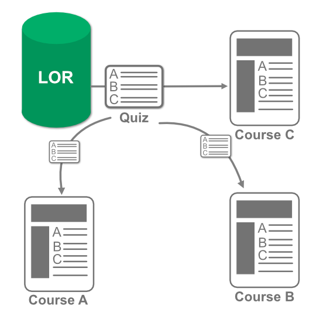

This method creates a separate copy of the object and adds it to your course. This copy is a complete duplication of the object, therefore no changes to it by you or the original author will affect it. It is important to note, that when an object is copied using this method it will duplicate the space taken by it within the LMS. It is recommended that large objects be dynamically or locked linked instead to save space.
Example: A 10 question quiz, published to the LOR, and copied as content to three courses.
The author of the object adds five more questions to one of the quizzes. Since these objects are all copies, only the one changed will have the five new questions. The copy of the object in the LOR will also not be updated as well. The three quizzes will take up three times the amount of storage in the system.